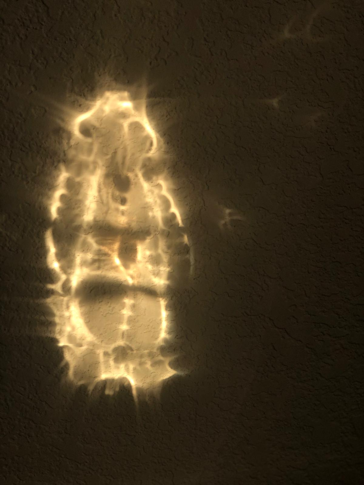

Geetha garu shared her experience after performing Rudra Abhisekam in 2023 as part of ShathaRudraAbhisekam project.
Geetha Lokesh
Kids from a remote school at Vamakuntla(Tiruvuru Mandal) Krishna district, started reciting Sri Rudram just after attending 2 classes.
A devotee
A devotee
A devotee
A devotee
A devotee
We all are very lucky to be under Subbayya garu training. He teaches with so much patience and with passion. I am seeing sir from 2019 and his teaching style is the same. He never loses patience & focus and It always amazes me the way he corrects so many people for hrs without losing patience.. I am blessed to be part of the Rudram group 🙏🙏
A devotee
Lord manifests himself in a devotee house,when their kids were chanting rudram.
Venkatesh Kammeta
By attending his classes and hearing him every day gives me a world of joy. Subbayya Garu is our Guruvu Garu. He taught us many things in the past 2 years. His dedication to lord Shiva and his interest in teaching Rudram is outstanding and second to none. We, mentors are still learning and assisting whatever way we can and just trying to help by way of mentoring. Personally, I am following his footsteps and seeking his guidance in spiritual journey.
Narashimah Rao Garu
Sir, thank you for the opportunity to chant during Rudrabhishekam. We are truly blessed to constantly revel in Rudram! Amongst all chants, I find that Aum, Gayathri & Rudram confer tremendous joy & peace in my life. Thank you for teaching us Rudram…🙏
Poornima Nikkam
గురువు గారికి హృదయపూర్వక నమస్కారాలు రుద్ర పారాయణ చేయడం మొదలు పెట్టినప్పటినుంచి ఎక్కడ చూసినా పరమేశ్వరుడే కనబడుతున్నారు కాశీ విశ్వనాధుని సన్నిధిలో రుద్ర పారాయణ చేసినట్టు నిద్రపోతున్నప్పుడు కలలుగా వస్తున్నాయి మనసంతా పరమేశ్వరుడు నిండి పోతున్నారు నిజంగా గురువు గారు దొరకడం మన అదృష్టం🙏🙏🙏🙏🙏🙏🙏🙏
Jyothi Viswanadh
Wow 😍 we all are very much blessed to be part of this spiritual group. feeling happy 😃🙏🏻( chaala santrupthi gaa vundi )… ekkada nundi ekkada Ki connect avuthunnam Guruvu gariki Dhanya vaadamulu 🙏🏻💐💐🙏🏻
Jyothi Madhavaram garu
My extended family were part of this group. They shared their divine experience. It’s a must in ones life time is what they said.
Vijaya Lakshmi Chavali Garu
The ideas you presented about how to approach learning Rudram on an emotional ,intellectual and spiritual level were laying the ground work to understand the evolution that occurs through the learning .We as students come from different thought processes . Your vision of how to know and approach this body of knowledge .What to expect from our self and how to watch the transformation in our self was clearly laid out .The mental outlook and the approach to this learning was clearly defined .The joy of learning prompted me to share this with more people
Rupa Sanku
Pranams Shastry garu for inspiring and motivating us.I was able to attend continuously for 5 days during the last week!I thought I may not be able to but somehow with your blessings along with shiva kept me attending for 5 days which were blissful! I always heard other people sharing their experiences and this time I got to experience and share was unbelievable!Each day I saw the same shiva manifesting in different ways!Chanting for 11times made it effort less with the group and listening to others and chanting along with them was a joyous moment and sometimes got to do it along with you was epitome! Your doing the Abhishekam and also chanting and bringing shiva to all our homes !Only little can be said as your an ice berg where we can see only the top and much more to it.Blessed to be a part of this group !🙏🏻🙏🏻🙏🏻
Sumathi Garu
Jai Karunamayi,Namaste 🙏🙏🙏 I am Bhadra Vadali from Maryland devotee of Amma Sri Karunamayi Ammavaru. Dear Friends Sri Eamani Subbayya Sastryji is from Iragavaram West Godavari District coming from Vedic family from Agraharam. Learning Rudram from such a Guru is a god sent direction and blessing. I come from neighboring village crossing Godavari River , Sri Sastry garu is blessed by Ammavaru Sri Karunamayi. Great Seva to Santayana Vedas sastry garu. Pranams to you🙏🙏🙏🕉🕉🕉
Bhadra Vadali Garu
అసలు అష్టోత్తరమంటేనే తెలియని నేను నమకం చదవడం ఏంటి. అది కూడా ఒక ప్రత్యేకమైన శివ లింగం కి మీలాంటి వారు అభిషేకం చేస్తుంటే. ఇంత అదృష్టం కల్పించిన శివా కి మీకు నా కృతఙ్ఞతలు. రోజూ శివా ని చూసి పడుకోవడం అలవాటై రాత్రి ఎంతో వెలితిగా అనిపించింది. కానీ కలలో నేను మీ ఇంటికి వచ్చి మీరు చదువుతుంటే అభిషేకం చేశాను. కార్తీక మాసం లో ఇంత భాగ్యం కలిగించిన మీకు నా కృతఙ్ఞతలు. మేమందరం కుడా పోటీ పడి చదివాము. మెంటర్స్ కి కృతఙ్ఞతలు. వాళ్ళని చూస్తుంటే చాలా ఆశ్చర్యం గా వుంటుంది మేమంటే నేర్చుకోవటానికి వస్తున్నాము కానీ వాళ్ళు మాకంటే ఎక్కువగా మాకు సహాయం చేస్తున్నారు సమయం వెచ్చిస్తున్నారు. నాకు ఈ దారిని చూపించిన నా ఫ్రెండ్ రాజీ కి కృతఙ్ఞతలు.
Sujatha Garu
Thank you, Guru garu and to all the Mentors helping and organizing this learning program — We all could see peace from of RUDRA in you 🙏
Phani Neeraja
Bhakthi ante ila undali ani nerpincharu Sir🙏🙏Patience, Discipline ,Punctuality, Saadana ,dedication to chant, cleanliness, selflessness moreover Ananya Bhakthi during Abhishekam.. it was a blissful experience n we r are very blessed to learn from you n participate in Rudrabhishekam. Ardhanareeshwara la kanipincharu swamivaru🙏In a single word, we had Chidaanandam experience
Praveena Garu
Thank you so much, never seen any one with such a dedication. I feel like Lord Parama Shiva is teaching us Rudram and he is making sure with no Pronouncing mistakes. We are so blessed to get this nice opportunity 🙏